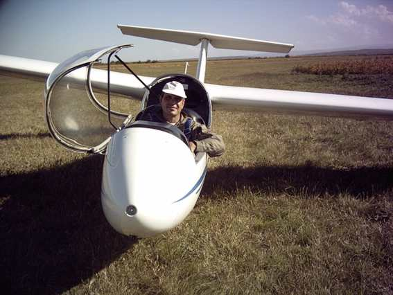
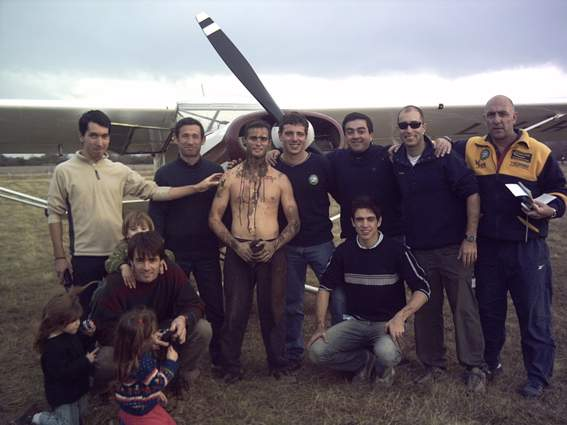

Sábado 23/07/2005 17:00 hs.:
Darío Tenaguillo expondrá "Introducción al vuelo deportivo - Aspectos de
Seguridad", en el Aula "Carlos H. Molina" de nuestro club. La finalidad de
esta clase es iniciar a los pilotos sin experiencia en el fascinante tema de la
navegación deportiva en planeador, antes de que comience la temporada.
Lunes 18/07/2005:
Notición para el volovelismo de Córdoba y Argentina: Hoy se voló la última
prueba de Holzdorf, Alemania, y el Vcom. Rodolfo "Tocho" Hub, quedó
14º de 38 en la general, en representación de la Fuerza Aérea Argentina,
volando un Standard Cirrus y compitiendo contra LS4 y ASW-19. FELICITACIONES
TOCHO !!

Sábado 16/07/2005:
Festejamos con un asado la habilitación de Norberto Ruesch como alumno de
piloto remolcador. Debemos agradecer al Mayor Eduardo Álvarez quién habilitó a
nuestro socio al avión remolcador.

Después de la clásica embarrada, posan para la foto de izq. a der., parados: Esteban González, Mayor Eduardo "Tala" Álvarez, Norberto Ruesch, Ariel Masgrau, Ricardo Gudiño, Darío Tenaguillo, y Fernando Mocibob. Agachados: Santiago Landi con sus hijos, y José I. Otero (h).